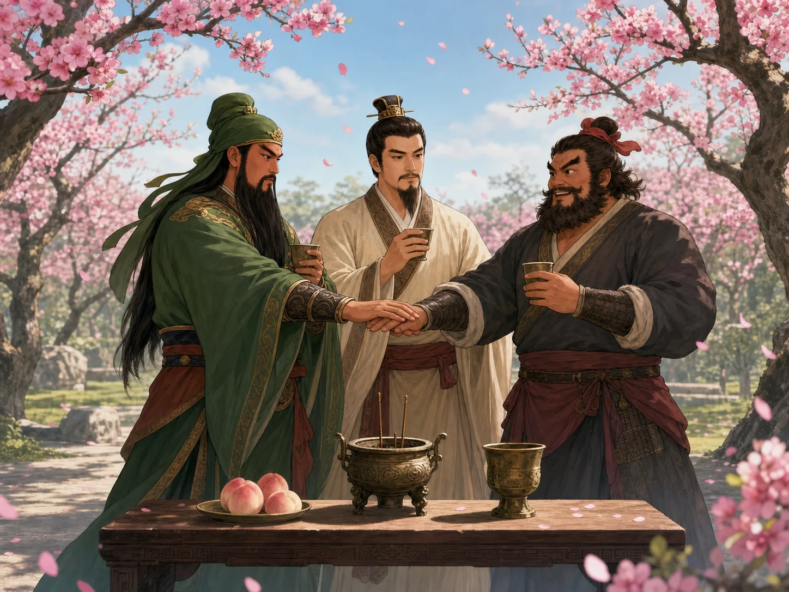
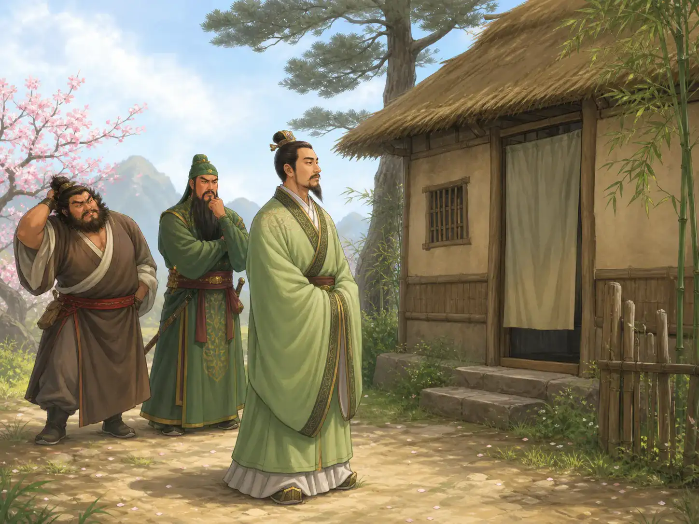
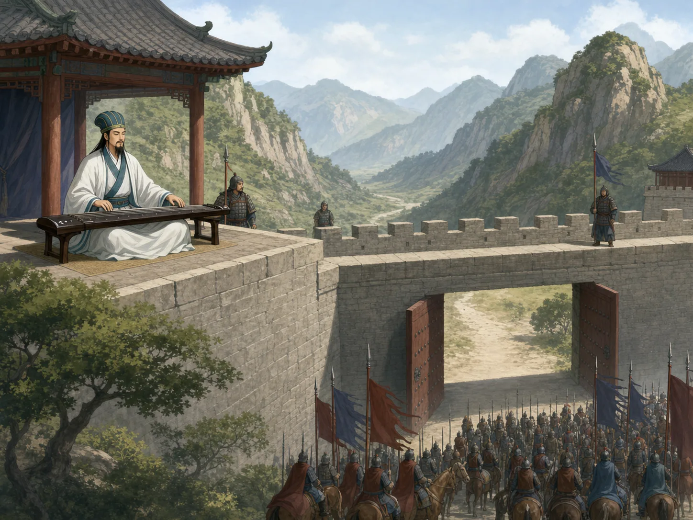

《三国演义》：三个国家斗智斗勇
Romance of the Three Kingdoms: Three States, Many Heroes
Page 1
先别急着记年份，先记住这些会发光的人
Before You Learn the Dates, You Meet the People
《三国演义》写的是汉朝末年天下大乱的时候。很多地方今天打、明天又换了主人，后来人们最熟悉的格局，变成了魏、蜀、吴三方对峙。
不过，大多数孩子第一次听三国，不会先记住哪一年发生了什么，而是先记住一串名字：刘备、关羽、张飞、诸葛亮、曹操、赵云。
这就是《三国演义》很特别的地方。它把一大段很乱、很长的历史，变成了一群特别鲜明的人。有人让你佩服，有人让你紧张，有人一出场就像在发光。
Romance of the Three Kingdoms takes place when the Han dynasty is breaking apart. One place changes hands after another, and later people remember the best-known pattern as three rival states: Wei, Shu, and Wu.
But most children do not meet this story by learning dates first. They meet it through names: A major Three Kingdoms leader remembered for kindness and persistence., A famous Three Kingdoms hero remembered for loyalty and a long green-bladed weapon in later stories., Zhang Fei, A famous Three Kingdoms strategist known for calm thinking and clever plans., A powerful Three Kingdoms leader whom people still argue about today., and Zhao Yun.
That is one special thing about the novel. It takes a long, tangled stretch of history and turns it into a group of unforgettable people. Some make you admire them. Some make you nervous. Some seem to shine the moment they appear.
Page 2
三个本来不一样的人，先结成了兄弟
Three Very Different Men First Become Brothers

Liu Bei, Guan Yu, and Zhang Fei swear brotherhood in the peach garden. For many readers, this shining loyalty is one of the first things they love about the story.
三国最有名的一幕之一，是“桃园结义”。刘备、关羽、张飞本来不是一家人，出身也完全不一样，可他们决定做同生共死的兄弟。
这件事最打动人的地方，不只是场面好看，而是它把“义气”这件事一下写亮了。不是因为你们天生就有同样的血缘，而是因为你们愿意在最难的时候站在一起。
要说明白一点：这一幕更像小说和戏曲里特别有名的经典场面，不是历史书里能一字一句证实的记录。可它太有力量了，所以后来很多人一说三国，脑子里就先冒出这一幕。
One of the most famous scenes in the Three Kingdoms story is the Peach Garden Oath. A major Three Kingdoms leader remembered for kindness and persistence., A famous Three Kingdoms hero remembered for loyalty and a long green-bladed weapon in later stories., and Zhang Fei are not born into one family, and they do not come from the same kind of life. Still, they decide to become brothers who will stand together through danger.
What moves readers here is not only the beautiful scene. It is the way the story suddenly makes loyalty glow. These men are not brothers because they share blood. They become brothers because they promise to stand together when life turns hard.
It is important to say one thing clearly: this moment is best known from the novel and later drama, not from a line-by-line official history record. But it is so powerful that for many readers, this is one of the first images that appears when they hear the word "Three Kingdoms."
Page 3
刘备跑了三次，才把诸葛亮请出茅庐
A major Three Kingdoms leader remembered for kindness and persistence. Has to Visit Three Times Before A famous Three Kingdoms strategist known for calm thinking and clever plans. Comes Out

On the third visit, Zhuge Liang is still sleeping. Liu Bei waits outside instead of hurrying him or getting angry.
后来，刘备想找一个真正有大本事的人来帮自己，于是去请诸葛亮。第一次没见到，第二次还是没见到，第三次才终于等到他出来。
这件事为什么会被讲这么久？因为它不只是“找到一个聪明人”而已。它还让孩子看到，刘备愿意低下身子，认认真真去请一个他尊重的人。
而诸葛亮一出场，也被写得特别像“还没走进战场，就已经先看懂大局的人”。这当然有文学加工，可也正因为这样，很多人后来一想到诸葛亮，就会想到草堂、等待，还有那种安静但很深的聪明。
Later, Liu Bei wants help from someone truly brilliant, so he goes to invite A famous Three Kingdoms strategist known for calm thinking and clever plans.. The first time he does not meet him. The second time he still does not meet him. Only on the third visit does Zhuge Liang finally come out.
Why has this story lasted so long? Because it is not only about finding a smart man. It also lets children see something important about Liu Bei. He is willing to lower himself and patiently seek out someone he truly respects.
And when Zhuge Liang appears, the novel presents him as the kind of person who can understand the whole board before the game has even fully begun. That is part literature, of course. But it is also why so many people think first of a quiet cottage, a long wait, and a deep calm intelligence when they think of Zhuge Liang.
Page 4
三国不只比谁更能打，还比谁更会想
The Three Kingdoms Is Not Only About Fighting. It Is Also About Thinking.

The gates stand open, and someone sits on the wall playing the qin. The calmer the scene looks, the harder it is to rush in.
很多孩子喜欢三国，不只是因为里面有将军和战马，还因为里面常常会忽然冒出很聪明的场面。
最有名的一个，就是“空城计”。诸葛亮手里人不多，对面大军却快到了。他没有把城门关起来，反而把城门打开，自己坐在城楼上弹琴。
对面一看，反而不敢进。因为有时候最吓人的，不是别人冲过来，而是别人明明危险的时候，却还安静得像早就想好了。
这就是《三国演义》一直好看的原因之一。它不只是写力气大不大，也一直在写：谁会看局势，谁会猜人心，谁能在最紧张的时候把脑子稳住。
Many children enjoy the Three Kingdoms story not only because it has generals and horses, but also because it keeps producing scenes of clever thinking.
One of the best-known is the Empty Fort Trick. Zhuge Liang has very few people with him, and a huge enemy army is coming. Instead of shutting the gates, he opens them and sits calmly on the city wall playing the qin.
The enemy looks at this and grows afraid to enter. Sometimes the most frightening thing is not when someone rushes at you. It is when someone stays calm in danger, as if every move has already been thought through.
That is one reason Romance of the Three Kingdoms keeps its power. It does not only ask who is strongest. It also keeps asking who understands the situation, who can read another person's mind, and who can keep thinking clearly when everyone else is frightened.
Page 5
所以大家记住的，不只是三个国家，还有很多种人
So People Remember Not Only Three States, but Many Kinds of People
《三国演义》里当然有打仗，可它真正留下来的，不只是战场，而是各种各样的人：讲义气的人，有耐心的人，多疑的人，聪明得让人发凉的人，也有忠心到让人心里一紧的人。
所以很多人长大以后，未必还能把三国的顺序讲得很完整，却还是会记得桃园结义、三顾茅庐、空城计这些场面。因为这些场面像在告诉你，人和人到底可以有多不一样。
Of course, Romance of the Three Kingdoms includes war. But what truly stays behind is not only the battlefield. It is the many kinds of people inside the story: loyal people, patient people, suspicious people, deeply clever people, and people whose courage tightens your heart.
That is why adults may forget the full order of events and still remember scenes like the Peach Garden Oath, the three visits to the cottage, and the Empty Fort Trick. Those scenes keep showing how different human beings can be from one another.
小结
In Summary
《三国演义》把很乱的一段历史，写成了一大群让人记得住的人。有人重义气，有人会等，有人会猜，有人会算，很多精彩都不只是从刀剑里出来的。
所以三国一直像一个很大的故事宝库。孩子先爱上人物，长大以后再慢慢回头看历史。
Romance of the Three Kingdoms turns a tangled period of history into a great crowd of memorable people. Some are loyal. Some are patient. Some are suspicious. Some are strategic. Much of its excitement comes not from weapons, but from character and thought.
That is why the Three Kingdoms remains such a rich story world. Children often love the people first, and only later return to the history behind them.